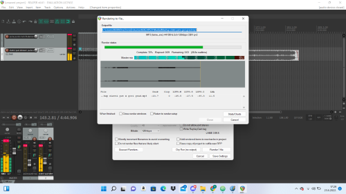

OPENSHOT
Za izradu videa izabrao sam program po imenu OpenShot. Što se tiče izrade samog videa trebalo mi je oko 2 sata rada kako
bi video ispao što kvalitetniji. U videu sam koristio pjesmu Rave te sam u ritmu pjesme pokušao napravit što bolji video. U izradi videa koristio sam
i slike i isječke iz razno ranih videa.
- Prvo sam ubacio sve slike i videe koje sam odlučio koristiti u izradi videa
- Nakon toga sam maknuo zvuk sa svih videa na način da sam stavio sve videe na traku za uređivanje te sam redom klikao
desni klik na videe, zatim bih odabrao opciju "Izdvoji zvuk" -> "Jedan isječak", a potom bih označio odvojeni zvuk i pritisnuo bih tipku DELETE
- Postupak sam ponavljao dok nisam maknuo zvuk sa svih videa
- Nakon toga krenuo sam kratiti videe i slike, te sam pokušao uskladiti moment što bolji u ritumu pjesme
- Nakon što sam završio sa uređivanjem, kliknuo sam crvenu ikonu na alatnoj traci te sam započeo render (izvoz) videa
Tijek izrade - završio sa uređivanjem ubačenih videa
Tijek izrade - nakon pola odrađenog uređivanja
Tijek izrade - završeno uređivanje videa

Render videa
Video možete pogledati u nastavku: